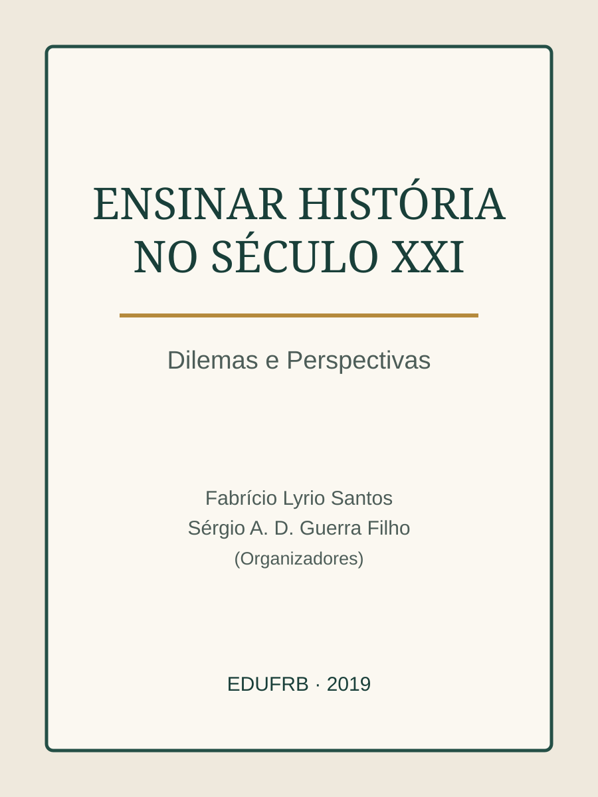

LAFotografia do perfil a inserir
Perfil
Espaço preparado para apresentar a trajetória docente e a relação com o Curso de História da UFRB.
Memorial 20 anos · Perfil docente
Professor(a) do Curso de História da UFRB
Espaço preparado para apresentar a trajetória docente e a relação com o Curso de História da UFRB.
Espaço preparado para áudio ou vídeo do(a) professor(a).
Espaço para disciplinas, projetos, orientações, eventos, pesquisa, extensão e outras atividades.
Espaço para publicações, fotografias, documentos, registros e outros materiais selecionados para o Memorial.
Produção intelectual
Primeira seleção de livro já conferido. A capa será substituída por imagem própria no próximo lote; o link já abre a edição completa em PDF.

Leandro Antonio de Almeida — autor de capítulo
EDUFRB · 2019
Capítulo: “Visão religiosa de mundo e ensino de História”. O botão abre o livro completo em PDF.
Ver livro